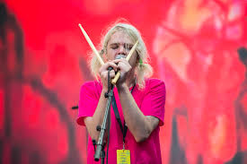
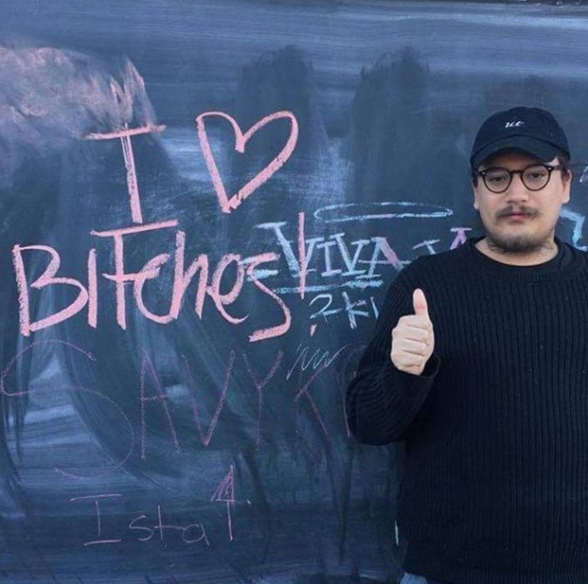

Ariel Marcus Rosenberg (born June 24, 1978), better known by his stage name Ariel Pink, is an American singer-songwriter, multi-instrumentalist, and record producer based in Los Angeles, California. He is known for his musical eclecticism, influenced by 1970s and 1980s pop radio and cassette culture. He first gained recognition after signing to Animal Collective's Paw Tracks label in 2003, where several of his limited-edition home recordings were first reissued. He has since signed to 4AD and released three studio albums on the label.
Ariel Marcus Rosenberg (born June 24, 1978), better known by his stage name Ariel Pink, is an American singer-songwriter, multi-instrumentalist, and record producer based in Los Angeles, California. He is known for his musical eclecticism, influenced by 1970s and 1980s pop radio and cassette culture. He first gained recognition after signing to Animal Collective's Paw Tracks label in 2003, where several of his limited-edition home recordings were first reissued. He has since signed to 4AD and released three studio albums on the label.
Check his works here

FrankJavCee is the online handle of musician and vlogger Francisco Jav Contreras, who is best known for posting YouTube instructional videos for creating various types of web content, most notably related to aesthetics and vaporwave.
In January 2010, Contreras launched the @frankjavcee Twitter feed, gaining over 14,000 followers in the next seven years. In May 2011, he created the FrankJavCee SoundCloud page. On December 19th, 2011, Contreras uploaded a chiptune remix of the 2011 dubstep song “First of the Year (Equinox)” by Skrillex to his FrankJavCee YouTube channel. On May 4th, 2012, he posted a “caffeinestep” remix of the 2012 Lana Del Ray track “Off to the Races”.
Visit his Tumblr by clicking here